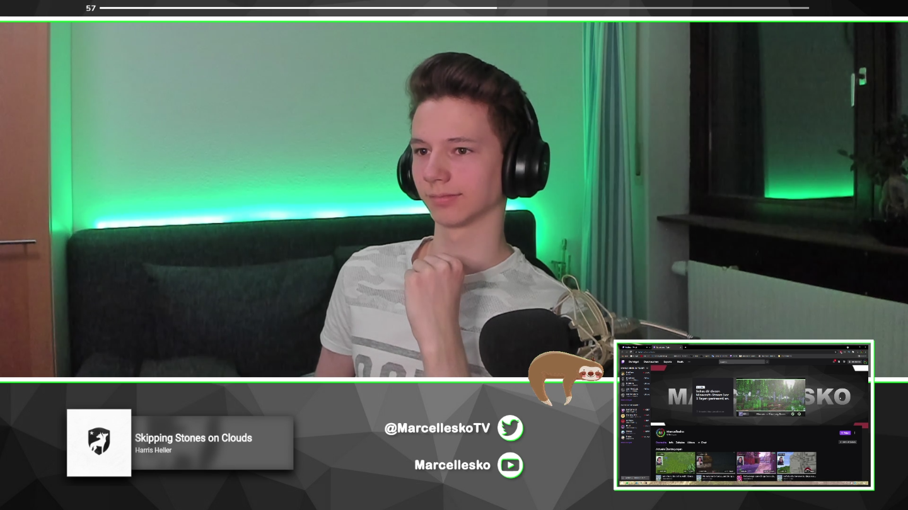
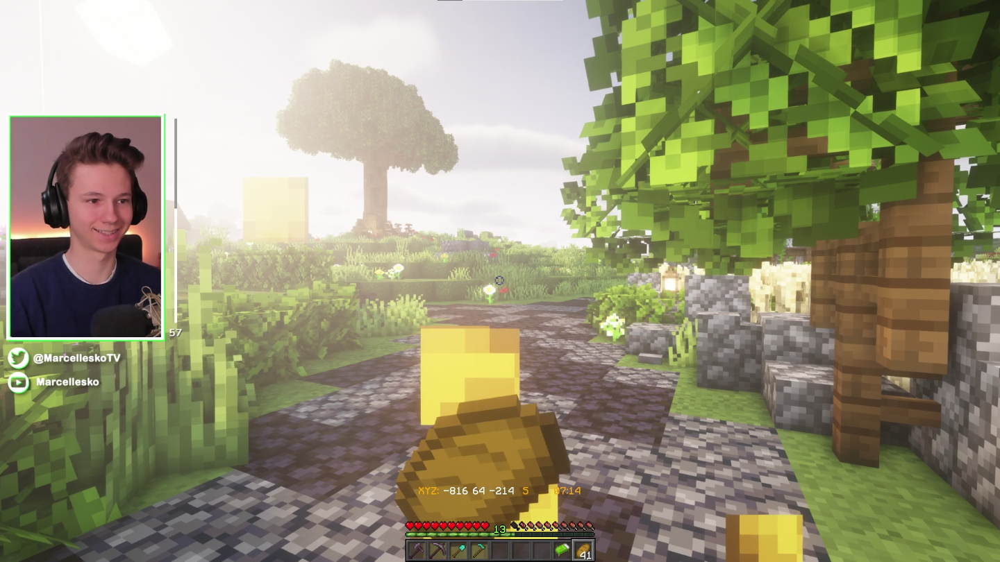
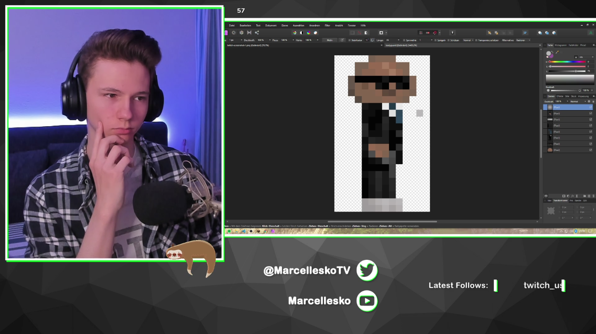

When:
On my Twitch Channel I live-stream every wednesday and friday (usually starting from
around 16pm UTC+1/2). I'm usually live for around 2 - 4 hours in one session.
What:
I do many different things over there, for example my main project at the time: Minecraft Krenia! But I also play some other gamemodes like
Bedwars or Speedrunning. Sometimes I
even play other games than Minecraft. Maybe Overwatch or one of the Assassin's Creed series...
If I feel like doing something totally different like making music or designing things, that
might appear as well.
Otherwise:
I usually also stream with a facecam, so you can see what I look like and can connect
more easily with me. And you can also talk with me and the viewers about a lot of things, as
long as their not too serious... Hope to see you in the chat :P


